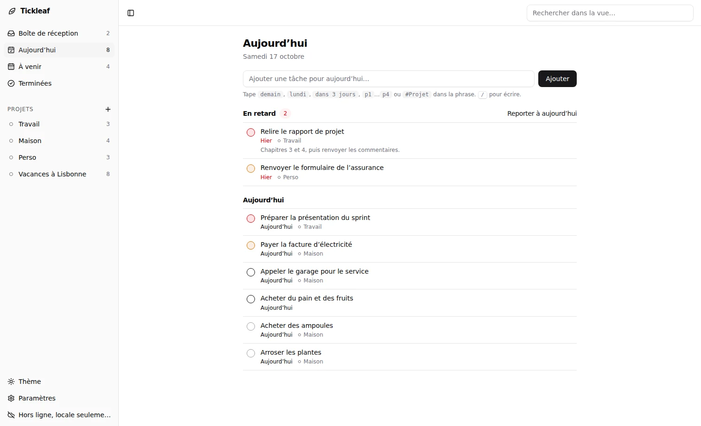
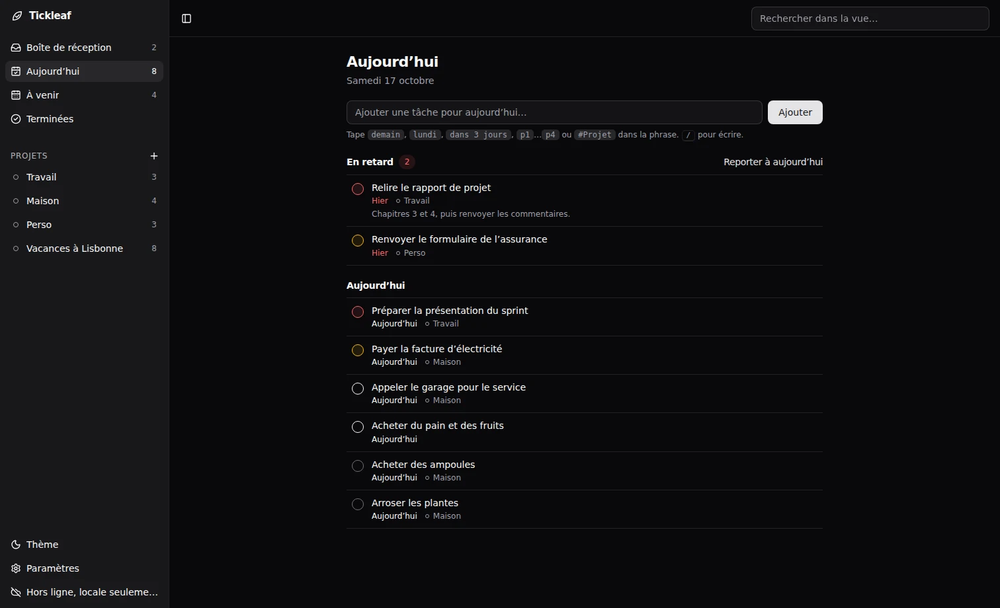
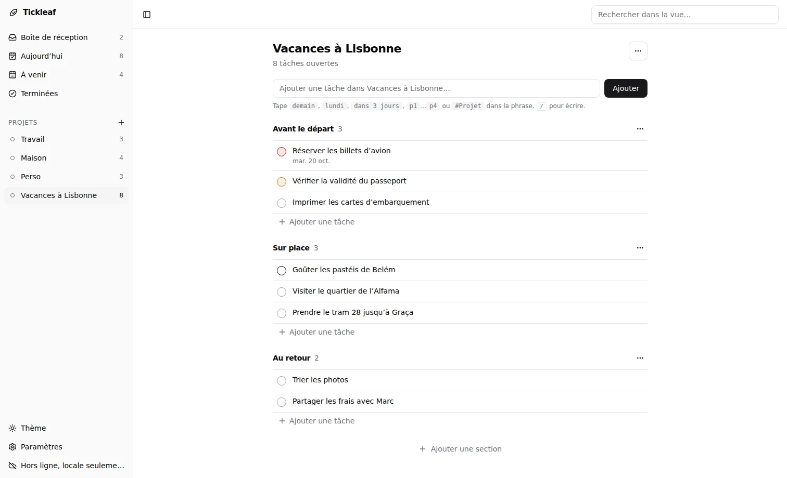
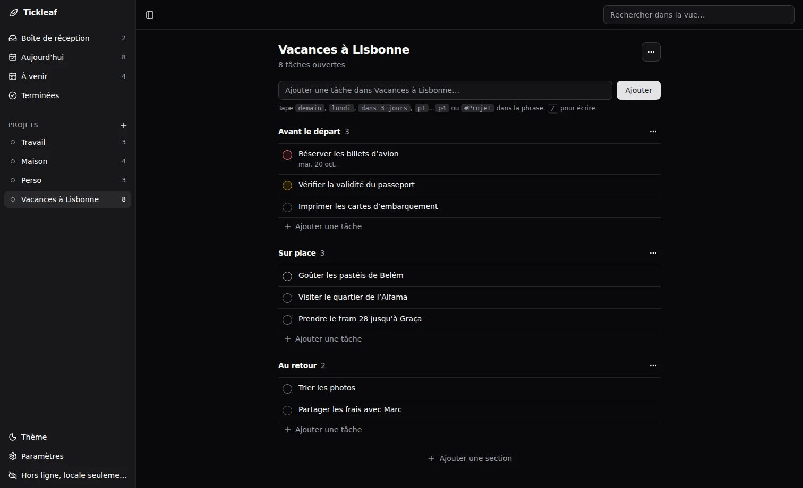
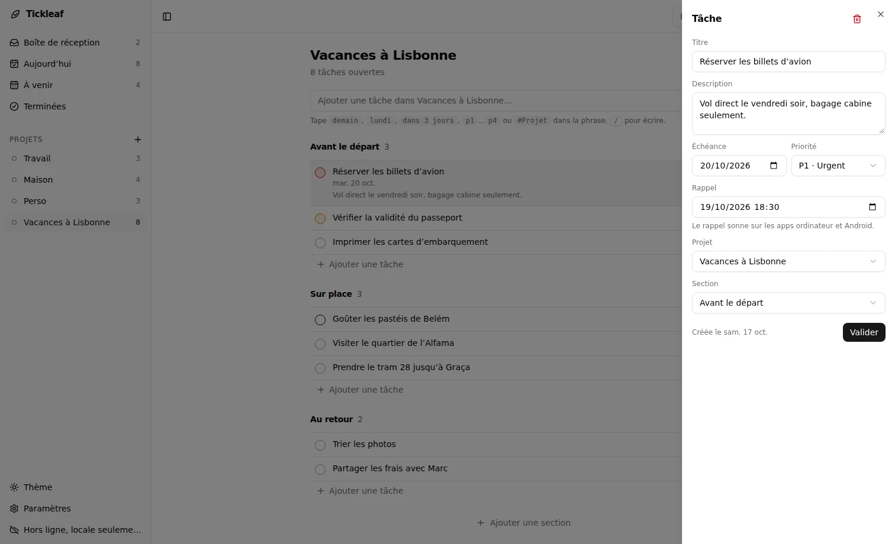
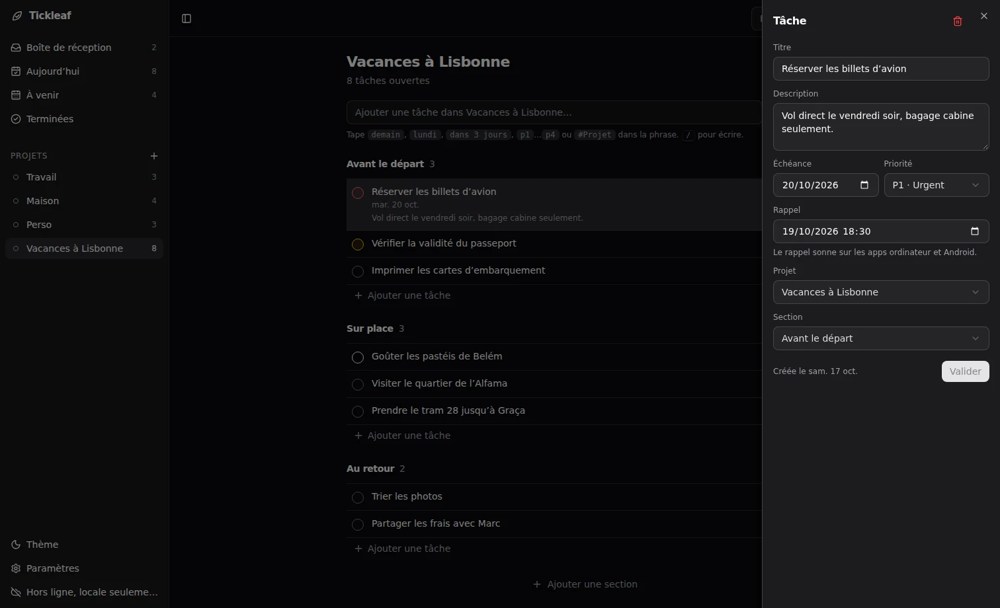

Quick add
Type “Call the bank tomorrow p1 #Admin”: the date, priority and project are read from the sentence.
Personal task manager
Tickleaf keeps your tasks, projects and reminders on your device, works offline and syncs across your computers and phone. The server never sees anything in clear text.
Get startedDownloadView on GitHub


Type “Call the bank tomorrow p1 #Admin”: the date, priority and project are read from the sentence.
Overdue tasks first, then today. The next seven days, day by day, then everything later.
Group tasks into projects, split projects into sections, and keep an inbox for what is not sorted yet.
Set a date and time on a task. The desktop and Android apps notify you when it is due.
Your data is encrypted on your device. The sync server is a relay that only stores opaque blobs.
Everything runs on the device, online or not. Install it as a PWA, or use the native apps.
Keep personal and work tasks apart, each with its own key and server, and switch from the sidebar.
The same interface in the browser, on Windows, macOS and Linux, and on Android. Pair a phone by scanning a QR code.




On first launch Tickleaf generates a 32-byte master key and shows it as a recovery key. Everything is derived from it on your device: the user id, the auth secret and the AES-256-GCM encryption key. There is no password and no account to hand over.
master key (32 bytes, stays on device)
├─ HKDF → user id (public)
├─ HKDF → auth secret (server stores SHA-256)
└─ HKDF → AES-256-GCM key (never leaves device)git clone https://github.com/adrien-cardinale/Tickleaf.git
cd Tickleaf
docker compose up -d --build
# open http://localhost:3000One container, one SQLite file. Self-hosting guide →